Blue's Clues Downloadable Games
 1/3
1/3 

Blue 101 - Do You See My Friend?
Come and match hats with Little Chick and friends.
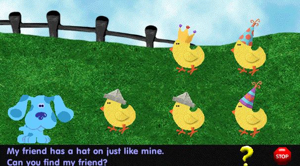
DOWNLOAD
 .exe file zipped (1.78 MB)
.exe file zipped (1.78 MB)
Blue 102 - Put Tickety Back Together
Help put Tickety back together again.
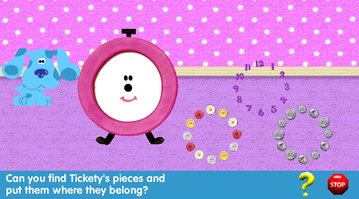
Note: This is a 16-bit program and requires special programs to run on 64-bit Windows, such as otvdm.
DOWNLOAD
.exe file zipped (1.54 MB)
Blue 104 - Sorting Pictures With Blue And Steve
Blue's pictures are all mixed up. Help her put them back in order and learn the story they tell.
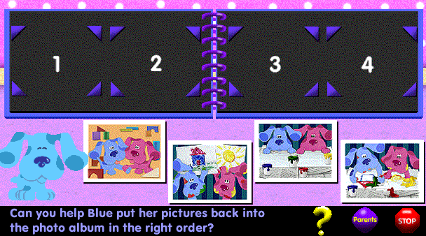
Note: This is a 16-bit program and requires special programs to run on 64-bit Windows, such as otvdm.
DOWNLOAD
.exe file zipped (1.43 MB)
Blue 105 - Sorting Clothes
Steve and Blue are sorting the clothes. Can you figure out where they all belong?
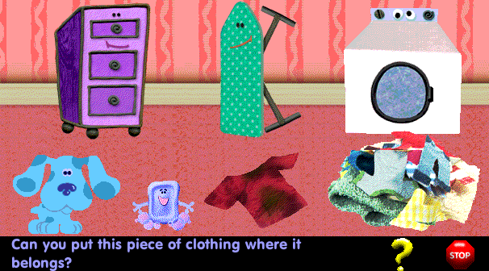
DOWNLOAD
.exe file zipped (1.82 MB)
Blue 106 - Instrument Sound Matching!
Do you hear a drum or a trumpet? Help Blue match the instrument to the sound it makes.
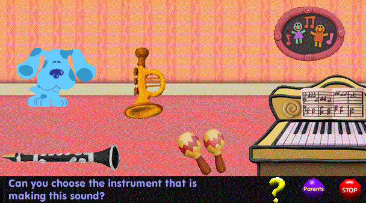
Note: This is a 16-bit program and requires special programs to run on 64-bit Windows, such as otvdm.
DOWNLOAD
.exe file zipped (1.38 MB)
Blue 107 - Paint Blue's Wagon
Help Blue match the colors of the wagon!
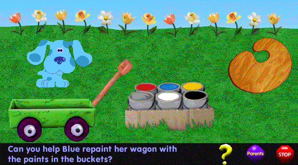
Note: This is a 16-bit program and requires special programs to run on 64-bit Windows, such as otvdm.
DOWNLOAD
.exe file zipped (1.46 MB)
Blue 109 - Use Your Imagination!
Clouds can look like all kinds of objects. Use your imagination to pick out the pictures!
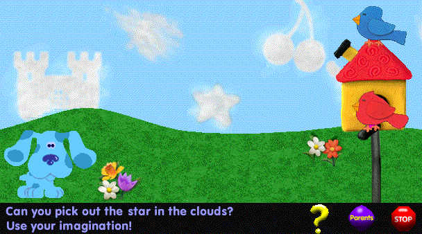
Note: This is a 16-bit program and requires special programs to run on 64-bit Windows, such as otvdm.
DOWNLOAD
.exe file zipped (1.46 MB)
Blue 110 - Matching Snowflakes
Two of these snowflakes are exactly alike. Can you help Mr. Salt and Mrs. Pepper make a match?
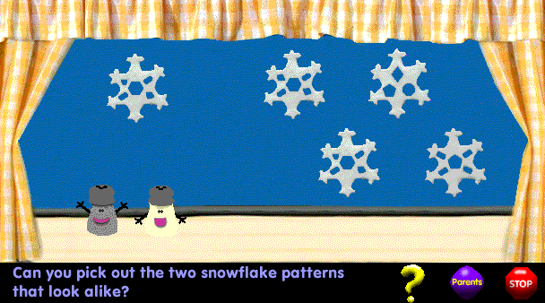
Note: This is a 16-bit program and requires special programs to run on 64-bit Windows, such as otvdm.
DOWNLOAD
.exe file zipped (1.42 MB)
Blue 112 - Jigsaw Puzzles
Blue's putting together jigsaw puzzles with Shovel and Pail! Can you help?
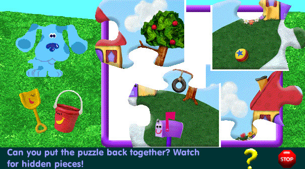
DOWNLOAD
.exe file zipped (2.88 MB)
Blue 115 - Picture Frame Patterns
Mr. Salt and Mrs. Pepper are making a macaroni picture frame. Help them find the missing pieces to finish the pattern.
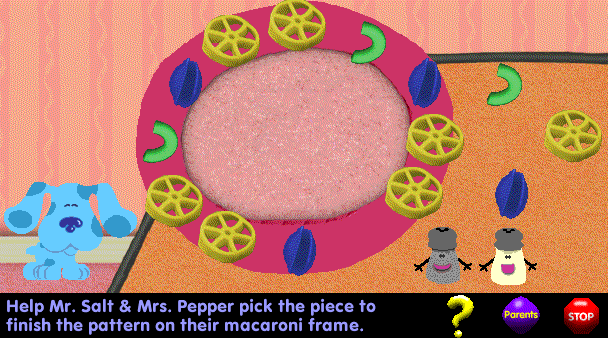
Note: This is a 16-bit program and requires special programs to run on 64-bit Windows, such as otvdm.
DOWNLOAD
.exe file zipped (1.31 MB)
Blue 116 - Fairy Tale Matching
Can you help our storybook friends return to their books? Match the characters to the stories where they belong.
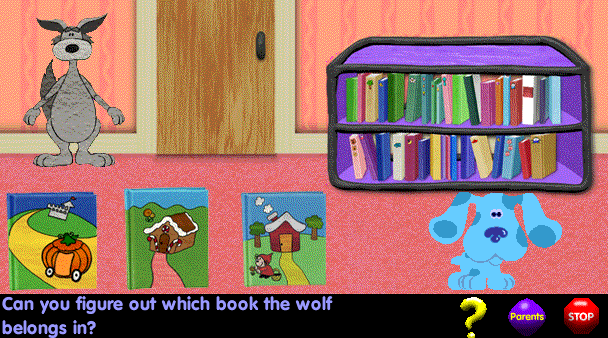
Note: This is a 16-bit program and requires special programs to run on 64-bit Windows, such as otvdm.
DOWNLOAD
.exe file zipped (1.46 MB)
Blue 117 - Letter "P" Word Play
Mr. Salt & Mrs. Pepper are packing a perfect picnic lunch. Help them choose items that begin with the letter "P."
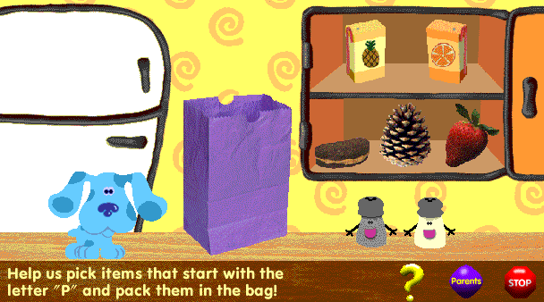
Note: This is a 16-bit program and requires special programs to run on 64-bit Windows, such as otvdm.
DOWNLOAD
.exe file zipped (1.27 MB)
Blue 118 - Shadow Matching
What's that? It's a shadow! Can you figure out who is making it?
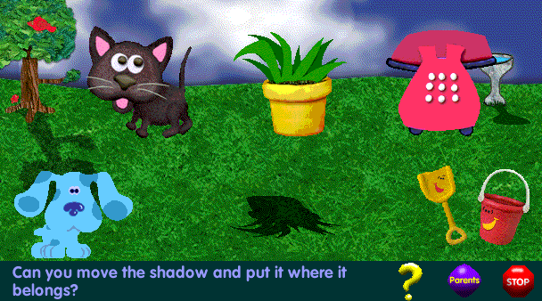
Note: This is a 16-bit program and requires special programs to run on 64-bit Windows, such as otvdm.
DOWNLOAD
.exe file zipped (1.28 MB)
Blue 119 - Felt Friends Dress-Up
It's dress-up time for the Felt Friends. Can you help them choose costumes that match?
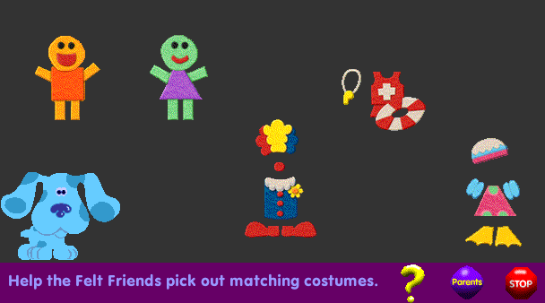
Note: This is a 16-bit program and requires special programs to run on 64-bit Windows, such as otvdm.
DOWNLOAD
.exe file zipped (1.29 MB)
Blue 120 - Picture Riddles
Shovel and Pail are doing a picture riddle. Put the right picture in place and solve the riddle!
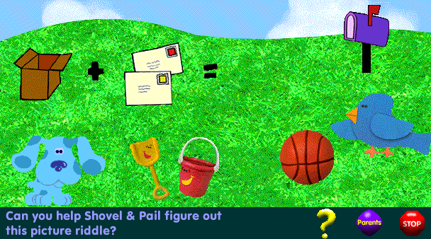
Note: This is a 16-bit program and requires special programs to run on 64-bit Windows, such as otvdm.
DOWNLOAD
.exe file zipped (1.32 MB)